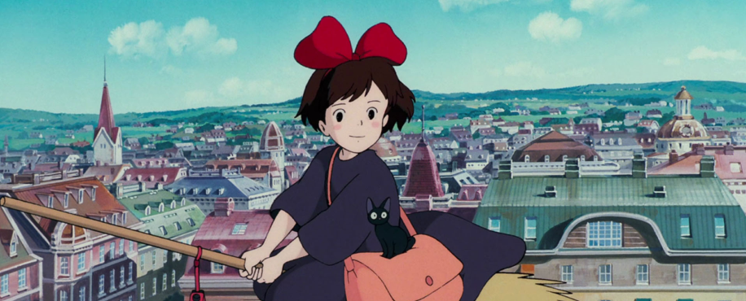
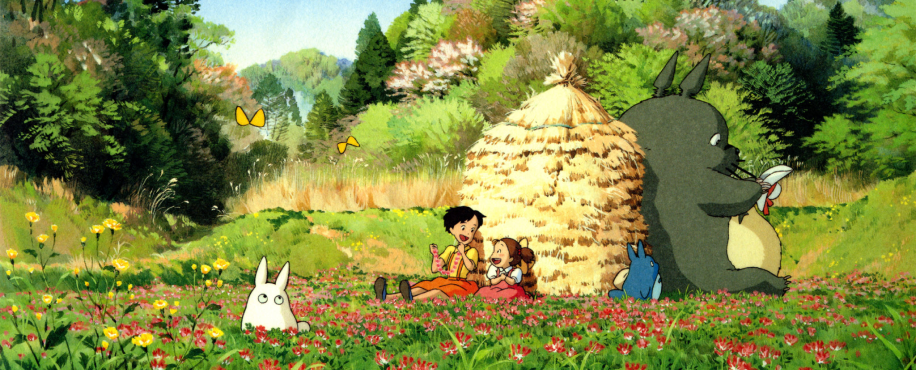
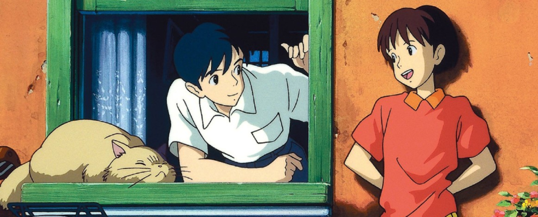

Aqui você verá dicas de séries, filmes, livros, teatros e muito mais.
1. Serviço de Entregas da Kiki (1989)
3 animações do estúdio Ghibli
que você precisa assistir
Escrito por: Cláu Ferreira | Data: 06/10/2024
Precisamos falar sobre Hilda:
O que essa série animada trás de lições.
Dicas de como aproveitar melhor a
27º Bienal do Livro em SP
O Studio Ghibli é mundialmente conhecido por suas animações encantadoras e atemporais, que vão além do
entretenimento para trazer histórias profundas, cheias de significado e beleza visual. Hoje, vou falar sobre
três obras-primas desse estúdio lendário:
Serviço de Entregas da Kiki
,
Meu Amigo Totoro
e
Sussurros do Coração
. Cada um desses filmes apresenta temas universais, como amadurecimento, amizade e autodescoberta,
abordados de maneiras delicadas e cativantes. Vamos explorar juntos o que torna essas animações tão
especiais!
Em Serviço de Entregas da Kiki, dirigido pelo mestre Hayao Miyazaki, acompanhamos a jornada de Kiki, uma jovem
bruxa que, aos 13 anos, precisa sair de casa e viver sozinha para aprimorar suas habilidades. Kiki se muda
para uma cidade litorânea, onde começa a trabalhar com entregas utilizando sua habilidade de voar em uma
vassoura.
Esse filme é uma metáfora sensível sobre o processo de amadurecimento e de encontrar seu
lugar no mundo. Ao longo da história, Kiki enfrenta desafios, questiona suas habilidades e precisa lidar com a
solidão e o crescimento pessoal. A simplicidade do enredo esconde uma profundidade emocional sobre
independência e autoconfiança. A cidade inspirada em cenários europeus também adiciona um charme visual,
tornando a aventura de Kiki ainda mais mágica.
2. Meu Amigo Totoro (1988)

Meu Amigo Totoro é, sem dúvida, uma das obras mais icônicas do Studio Ghibli e uma das animações mais
conhecidas no mundo todo. A história acompanha as irmãs Satsuki e Mei, que se mudam para o campo com o pai
enquanto a mãe está hospitalizada. No campo, elas descobrem um mundo mágico habitado por seres fantásticos,
incluindo o carismático Totoro, uma criatura gigante e peluda que se torna seu amigo e protetor.
Esse
filme é uma celebração da infância e da conexão com a natureza. Totoro, com sua figura acolhedora e gentil,
simboliza a magia e a pureza do olhar infantil. O ritmo do filme é calmo, permitindo que o espectador se
envolva com a tranquilidade do ambiente rural e a simplicidade da vida das crianças. O filme, além de
visualmente encantador, oferece uma abordagem reconfortante sobre o poder do imaginário infantil e a maneira
como ele ajuda a enfrentar desafios da vida real.
3. Sussurros do Coração (1995)

Esses três filmes do Studio Ghibli – Serviço de Entregas da Kiki, Meu Amigo Totoro e Sussurros do Coração –
têm algo em comum: a habilidade de tocar o público de maneira profunda, com histórias que exploram temas
universais e humanos. Cada um, à sua maneira, aborda o crescimento pessoal, a amizade e os desafios da vida,
sempre com um toque de magia e sensibilidade. Seja através da jornada de uma jovem bruxa, do encontro com um
ser mágico no campo, ou da busca por um propósito na vida, essas animações têm o poder de nos inspirar e nos
lembrar da beleza e complexidade da existência.
Se você ainda não viu esses filmes, vale a
pena embarcar nessas aventuras encantadoras e descobrir por que o Studio Ghibli é tão amado no mundo
inteiro!
Diferente das obras fantásticas de Ghibli, Sussurros do Coração é um filme mais realista, que se passa em um
subúrbio japonês. Dirigido por Yoshifumi Kondō e escrito por Miyazaki, o filme conta a história de Shizuku,
uma adolescente que adora ler e descobre que todos os livros que pega emprestado da biblioteca foram lidos por
um garoto chamado Seiji. Curiosa, ela decide descobrir quem é esse garoto, enquanto também lida com as
pressões de decidir o que fazer com seu futuro.
Sussurros do Coração explora temas como
autodescoberta, paixão pelo que se faz e o processo de amadurecimento. É uma história sobre seguir os próprios
sonhos e o medo que vem com a incerteza do futuro. O romance entre Shizuku e Seiji é tratado de forma
delicada, sem pressa, refletindo o ritmo natural da vida. Além disso, o filme conta com uma trilha sonora
memorável, especialmente com a música "Take Me Home, Country Roads", que se torna um símbolo do desejo
de Shizuku de encontrar seu próprio caminho.